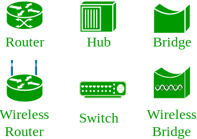

Basics of Computer Networking
Open system:
A system which is connected to the network and is ready for communication.
Closed system:
A system which is not connected to the network and can’t be communicated with.
Computer Network:
It is the interconnection of multiple devices, generally termed as Hosts connected using multiple paths for the purpose of sending/receiving data or media.
There are also multiple devices or mediums which helps in the communication between two different devices which are known as Network devices. Ex: Router, Switch, Hub, Bridge.

The layout pattern using which devices are interconnected is called as network topology. Such as Bus, Star, Mesh, Ring, Daisy chain.

OSI:
OSI stands for Open Systems Interconnection. It is a reference model that specifies standards for communications protocols and also the functionalities of each layer.
Protocol:
A protocol is the set of rules or algorithms which define the way how two entities can communicate across the network and there exists different protocol defined at each layer of the OSI model. Few of such protocols are TCP, IP, UDP, ARP, DHCP, FTP and so on.
UNIQUE IDENTIFIERS OF NETWORK
Host name:
Each device in the network is associated with a unique device name known as Hostname.
Type “hostname” in the command prompt and press ‘Enter’, this displays the hostname of your machine.